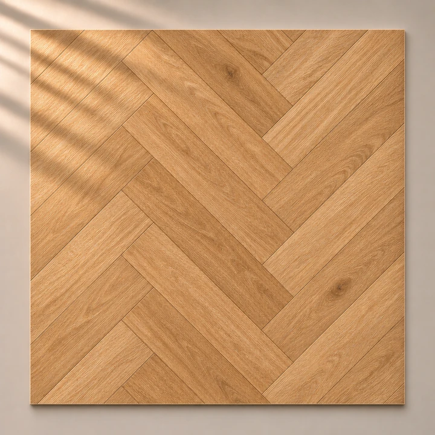

Чем паркет на каменной основе отличается от кварцвинила?
Две планки с рисунком дуба могут выглядеть почти одинаково. У паркета на каменной основе вы видите срез настоящей древесины. У кварцвинила под дерево рисунок напечатан и закрыт прозрачным защитным слоем.

Что показывает срез планки
Обозначение SPC описывает жёсткую каменно-полимерную основу. На ней может лежать как древесный шпон, так и виниловый декор. Бывает и гибкий кварцвинил без жёсткой SPC-плиты.
| «Приоритет Паркет» | Кварцвинил под дерево |
|---|---|
| Поверхность из шпона дуба или ореха толщиной 0,6 мм защищают семь слоёв УФ-лака. | Над печатным рисунком расположен прозрачный полимерный слой. Его толщину указывают в характеристиках коллекции. |
| Рисунок создают годичные кольца, волокна и сучки самой древесины. Даже у планок одного оттенка они различаются. | Рисунок задаёт набор печатных изображений. При раскладке можно встретить несколько планок с одинаковым расположением сучков. |